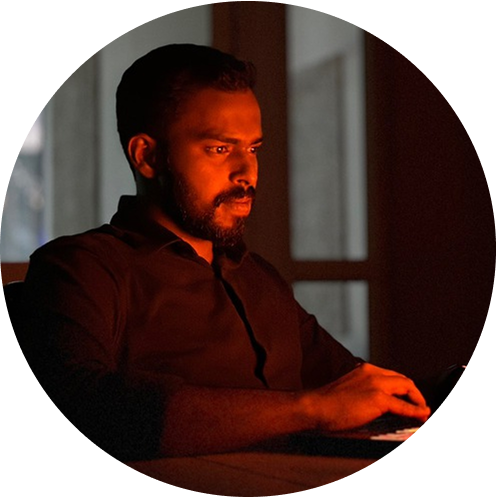

About
Transforming ideas into reality. Connecting to users and crafting experiences based on their needs and desires.

I’m an enterprise product designer crafting systems, workflows, and experiences that simplify complexity at scale. At Aquera, I’ve led design for automation products, brought consistency to 10+ internal tools under a unified language, and pushed accessibility forward through a WCAG 2.2 AA–compliant design system.
Previously, I worked with clients across finance, education, and non-profits, leading the design of impactful digital products.
Beyond work, I build side products for fun and mentor up-and-coming designers—because good design should be shared, not gatekept.
Feel free to chat or connect with me on exciting opportunities.
Contact
Or email me sadathn6@gmail.com